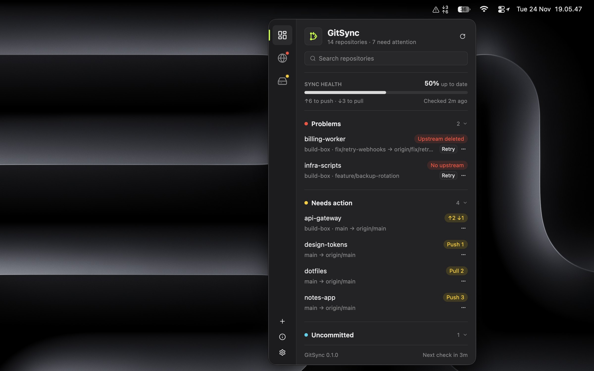
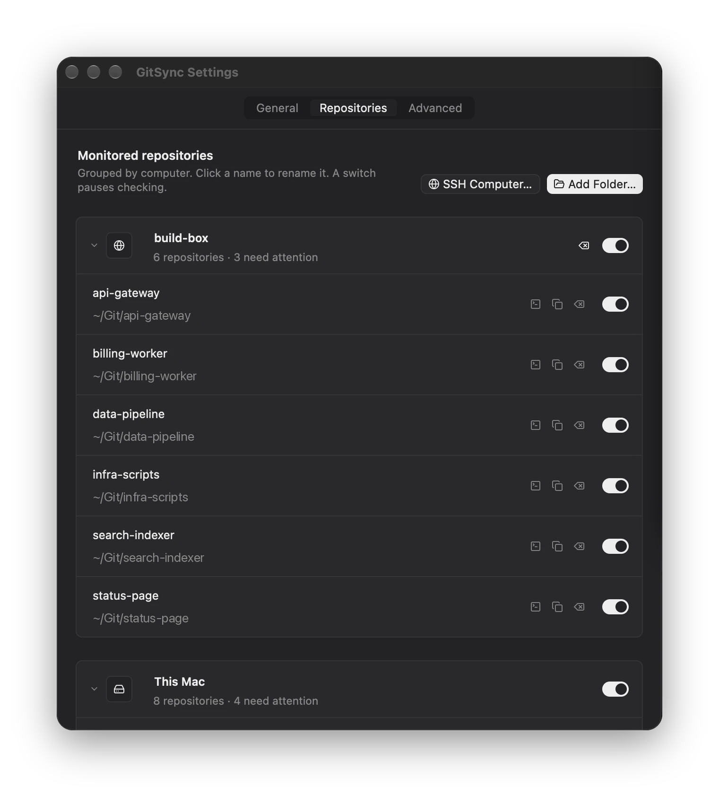
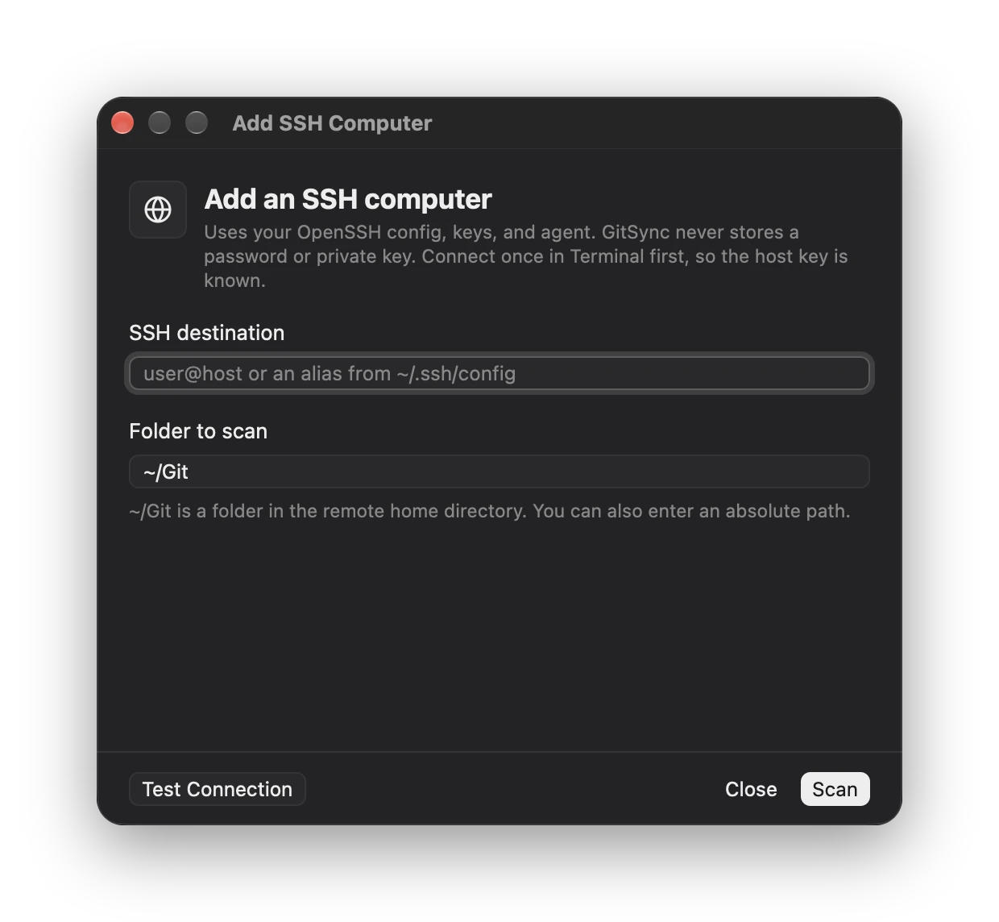

See which repos need you.
A macOS menu bar app that watches the Git working trees you pick, on this Mac and over SSH, and shows which are ahead, behind, or stuck. It only reads.
Build from source⌘G opens it from any app

- One row per computer on the railThis Mac and each SSH host, with a dot when one needs attention.
- Problems firstNo upstream, a deleted upstream, a merge halfway: these sort above everything else.
- Counts you can trustWith consent it fetches upstream only, so ahead and behind match the remote.
Point it at your folders.
Add a folder on this Mac, or an SSH computer and a path like ~/Git. GitSync finds every working tree beneath it.
Add the same folder again later and it syncs instead of doubling up: new repositories join, a moved one keeps its name and settings, and ones that are gone drop off.
SSH runs in batch mode with your own
~/.ssh/config and agent. No passwords are stored or asked for.
Test the connection before anything is added.
Test Connection checks that the SSH login works and that Git is installed on the other side, so a typo shows up here and not later as an empty list.
Discovery skips
node_modules, .cache and Library, and never follows symlinks out of the folder you chose.